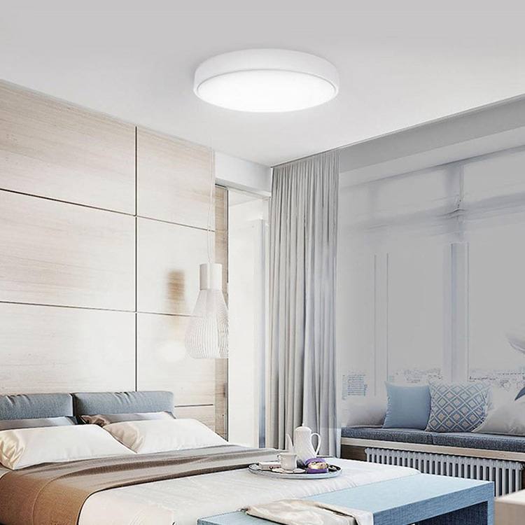
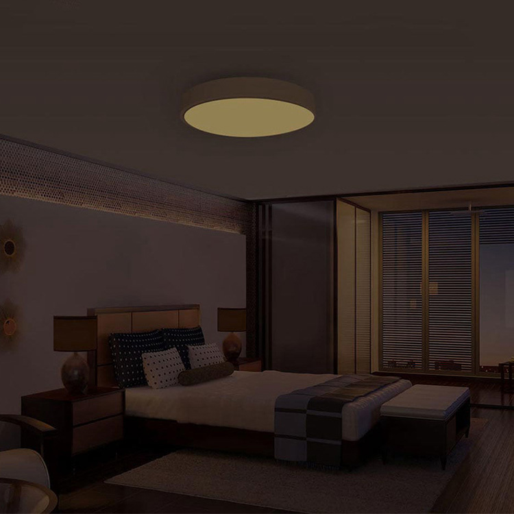
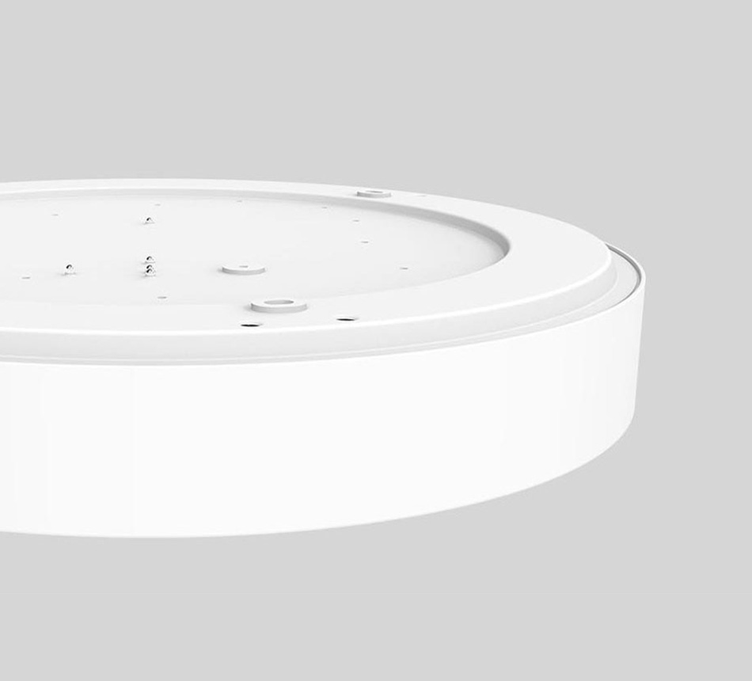
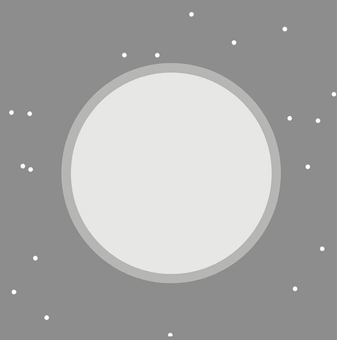

<div class="row nox-round">
    <div class="col-xs-12 col-sm-12 col-md-10 col-md-offset-1 col-lg-8 col-lg-offset-2 content">
        <section class="row nox-round_content_1">
            <div class="col-xs-12 col-sm-6 col-md-6 col-lg-6">
                <div class="text">
                    <h1>Yeelight Crystal Ceiling Light Round Diamond</h1>
                    <h2>Интелектуальное освещение с&nbsp;натуральным светом</h2>
                    <p>Регулируемая яркость и&nbsp;цветовая температура | Защита от пыли и&nbsp;насекомых | Умное
                        управление смартфоном</p>
                </div>
            </div>
            <div class="col-xs-12 col-sm-6 col-md-6 col-lg-6">
                
            </div>
        </section>

        <section class="row nox-round_content_2">
            <div class="col-xs-12 col-sm-12 col-md-6 col-md-push-6 col-lg-6 col-lg-push-6" style="padding: 0">
                <div class="text">
                    <h2>Простота в сочетании с&nbsp;натуральным светом</h2>
                    <p>Простой дизайн светильника в сочетании с круглой формой и белым цветом корпуса, идеально
                        вписывается в любой интерьер.</p>
                    <p>За счет 72 качественных светодиодиодов в светильнике, Crystal Round достигает показателя
                        цветопередачи Ra95, отражая истинные цвета предметов в помещении. Crystal Round поможет вам
                        видить мир таким какой он есть на самом деле.</p>
                </div>
            </div>
            <div class="col-xs-12 col-sm-12 col-md-6 col-md-pull-6 col-lg-6 col-lg-pull-6" style="padding: 0; font-size: 0;">
                </div>
        </section>

        <section class="row nox-round_content_3">
            <div class="col-xs-12 col-sm-12 col-md-6 col-lg-6" style="padding: 0">
                <div class="text">
                    <h2>Плавная регулировка яркости</h2>
                    <p>Настраивайте яркость под свое настроение и занятие. Более яркий свет поможет взбодриться утром и
                        быть продуктивным. Тусклый лунный свет даст возможность расслабить и легко уснуть.</p>
                    <p>Через приложение Yeelight также доступны предустановленные режимы — вчереинка, чтение, кино,
                        работа. Каждому занятию свой свет!</p>
                </div>
            </div>
            <div class="col-xs-12 col-sm-12 col-md-6 col-lg-6" style="padding: 0; font-size: 0;"></div>
        </section>

        <section class="row nox_content_4">
            <div class="col-xs-12 col-sm-12 col-md-12 col-lg-12 align-center">
                <div class="text">
                    <h2>Регулируемая цветовая температура</h2>
                    <p>Crystal Round поддерживает плавную настройку цветовой температуры. Холодные цвета создадут
                        приятную атмосферу свежести в жаркий летний день, а теплый свет сделает более уютной комнату в
                        холодный зимний вечер.</p>
                </div>
                <ul class="function">
                    <li>
                        <span class="icon inclamp"></span>
                        <p>2800K <br>Лампа накаливания</p>
                    </li>
                    <li>
                        <span class="icon sunriselight"></span>
                        <p>3400K <br>Солнце на восходе</p>
                    </li>
                    <li>
                        <span class="icon sunlight"></span>
                        <p>5500K <br>Дневной свет</p>
                    </li>
                    <li>
                        <span class="icon fluorlight"></span>
                        <p>6500K <br>Люминисцентный свет</p>
                    </li>
                </ul>
                
            </div>
        </section>

        <section class="row nox-round_content_8">
            <div class="col-xs-12 col-sm-6 col-md-6 col-lg-6" style="padding: 0">
                <div class="text">
                    <h2>Несколько элементов управления</h2>
                    <p>Crystal Round поддерживает несколько вариантов управления. Помимо традиционного
                        настенного переключателя, в вашем распоряжении пульт Bluetooth и мобильное приложени Yeelight
                        или Mi Home. Управлять светом стало легко. Синхронизируя ваш свет с помощью Google Assistant или
                        Amazon Alexa, вы можете реализовать голосовое управление яркостью и цветовой температурой.</p>
                    <ul class="function">
                        <li>
                            <span class="icon appcontrol"></span>
                            <p>Приложение</p>
                        </li>
                        <li>
                            <span class="icon swichcontrol"></span>
                            <p>Выключатель</p>
                        </li>
                        <li>
                            <span class="icon remotecontrol"></span>
                            <p>Пульт</p>
                        </li>
                    </ul>
                </div>

            </div>
            <div class="col-xs-12 col-sm-6 col-md-6 col-lg-6" style="padding: 0; font-size: 0;"></div>
        </section>

        <section class="row nox-round_content_5">
            <div class="col-xs-12 col-sm-12 col-md-6 col-md-push-6 col-lg-6 col-lg-push-6" style="padding: 0">
                <div class="text">
                    <h2>Превосходное качество изготовления</h2>
                    <p>Светильник изготовлен из качественного алюминиего сплава, что придает ему достаточную прочность
                        при весе всего 1.9 кг. Плафон изготовлени из безопасного для здоровья пластика. Благодаря
                        хорошему теплоотводу светильник не деформируется в процессе использования.</p>
                </div>
            </div>
            <div class="col-xs-12 col-sm-12 col-md-6 col-md-pull-6 col-lg-6 col-lg-pull-6" style="padding: 0; font-size: 0;"></div>
        </section>

        <section class="row nox-round_content_7">
            <div class="col-xs-12 col-sm-6 col-sm-push-6 col-md-push-6 col-md-6 col-lg-6 col-lg-push-6"
                style="padding: 0; font-size: 0;"></div>
            <div class="col-xs-12 col-sm-6 col-sm-pull-6 col-md-6 col-md-pull-6 col-lg-6 col-lg-pull-6"
                style="padding: 0">
                <div class="text">
                    <h2>Защита от пыли и&nbsp;насекомых</h2>
                    <p>Антимоскитный дизайн Crystal Round обеспечивает плотную герметизацию, а также предотвращает
                        попадание пыли и насекомых внутрь лампы. Благодаря этому во время уборки вы можете забыть о
                        светильнике.</p>
                </div>
            </div>
        </section>

        <section class="row nox-round_content_11">
            <div class="col-xs-12 col-sm-12 col-md-12 col-lg-12">
                
                <table class="table">
                    <thead>
                        <tr>
                            <th colspan="2">Характеристики</th>
                        </tr>
                    </thead>
                    <tbody>
                        <tr>
                            <td>Модель</td>
                            <td>YLXD07YL</td>
                        </tr>
                        <tr>
                            <td>Цвет</td>
                            <td>Белый</td>
                        </tr>
                        <tr>
                            <td>Размеры</td>
                            <td>400x80mm</td>
                        </tr>
                        <tr>
                            <td>Вес</td>
                            <td>1.9 кг</td>
                        </tr>
                        <tr>
                            <td>Световой поток</td>
                            <td>Регулируемый: 350lm-6500lm</td>
                        </tr>
                        <tr>
                            <td>Цветовая температура</td>
                            <td>Регулируемая: 2700K-6500K</td>
                        </tr>
                        <tr>
                            <td>CRI</td>
                            <td>>95</td>
                        </tr>
                        <tr>
                            <td>Мощность</td>
                            <td>35W</td>
                        </tr>
                        <tr>
                            <td>Сеть</td>
                            <td>Wi-Fi IEEE 802.11 b/g/n 2.4GHz</td>
                        </tr>
                        <tr>
                            <td>Поддерживаемые платформы</td>
                            <td>Android 4.4 и выше / IOS 8.0 и выше</td>
                        </tr>
                        <tr>
                            <td>Управление</td>
                            <td>Голосовое, пульт, приложение</td>
                        </tr>
                    </tbody>
                </table>
            </div>
        </section>
    </div>
</div>